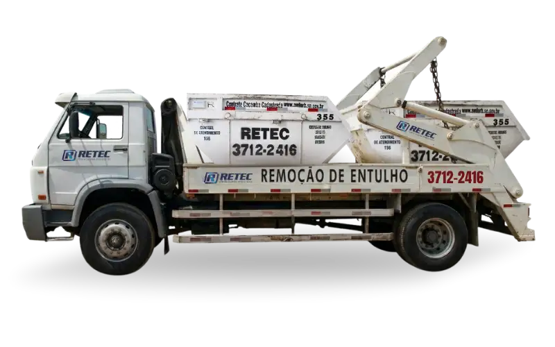
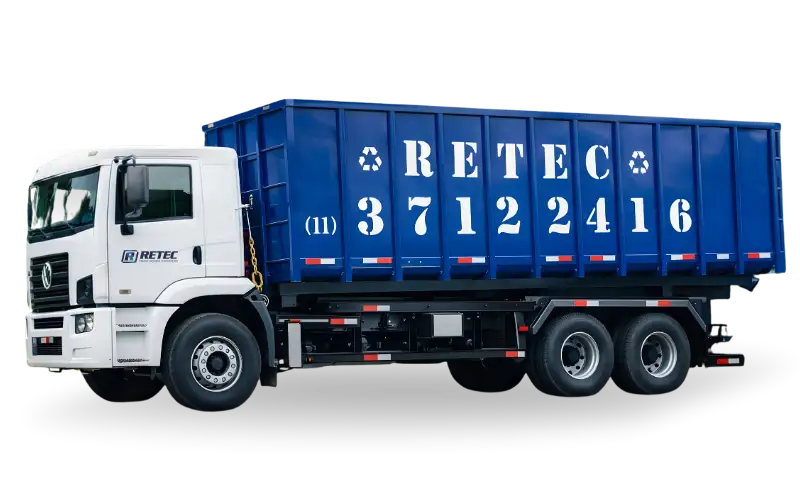

Entrega com agendamento preciso
Comunicamos data e horário com antecedência para a administração e portaria do condomínio. Cumprimos o compromisso — porque no Alphaville um atraso gera bloqueio de acesso e paralisação de obra.
Condomínio fechado tem portaria, regras de acesso e síndico exigente. A RETEC conhece esse universo há mais de 20 anos: entregamos no horário combinado, seguimos as normas internas de cada empreendimento e entregamos toda a documentação ambiental na mesma coleta.
Atendimento rápido em Barueri e Alphaville + descarte legalizado para condomínios e grandes obras.

Para reformas em condomínios e residências
Capacidade de 4m³, equivalente a aproximadamente 4 carradas de entulho. Estacionada em via pública ou dentro da obra, com sinalização obrigatória. Prazo: 7 dias em Barueri e Alphaville. Ideal para reformas e obras em condomínios fechados.
Entulho de obra e reforma, alvenaria, concreto, argamassa, tijolos, revestimentos cerâmicos, madeira (sem tratamento químico), ferro, aço, terra e areia, gesso, drywall, vidro e poda de árvores.
Lixo doméstico e orgânico, produtos químicos e tóxicos, tintas e solventes, pneus, resíduos hospitalares, lâmpadas fluorescentes, baterias, amianto/asbesto e qualquer resíduo contaminado.

Para grandes obras e incorporadoras
Capacidade de 26m³, equivalente a até 26 carradas de resíduo. Sistema Roll-on Roll-off: transportada por caminhão especializado. Indicada para canteiros de grande porte, demolições e operações industriais em Barueri e Alphaville.
Todos os resíduos da 4m³, mais: grandes volumes de entulho de demolição, estruturas metálicas e ferragens, grandes quantidades de madeira, concreto armado fragmentado, tubulações, resíduos volumosos de obras industriais e comerciais.
Resíduos perigosos (Classe I), produtos químicos e tóxicos, resíduos hospitalares (RSS), lixo doméstico, pneus, baterias, lâmpadas fluorescentes, amianto/asbesto e qualquer material contaminado.
Condomínios exigentes precisam de parceiros que entendam as regras do jogo. A RETEC opera nesse mercado há décadas.
Comunicamos data e horário com antecedência para a administração e portaria do condomínio. Cumprimos o compromisso — porque no Alphaville um atraso gera bloqueio de acesso e paralisação de obra.
NF, CTR e MTR em cada serviço. Síndicos, construtoras e incorporadoras de Barueri e Alphaville têm toda a rastreabilidade ambiental necessária, sem ir atrás de documentos depois.
Nosso aterro e ATT próprios garantem que o entulho da sua obra em Alphaville, Tamboré ou Aldeia da Serra seja descartado dentro da lei — sem terceirização e com total rastreabilidade.
Sim. Atendemos toda Barueri e Alphaville, incluindo condomínios fechados, loteamentos e obras em Tamboré, Aldeia da Serra, Bethaville, Jardim Belval e demais bairros da região. Nossa equipe está acostumada com as regras de acesso e portaria de condomínios de alto padrão.
Agendamos horário com antecedência para que o condomínio possa liberar o acesso. Nossos motoristas são treinados para seguir as normas internas de cada empreendimento — inclusive restrições de horário, rotas de acesso e posicionamento da caçamba. Toda a documentação de entrada e saída é fornecida.
Sim. A Prefeitura de Barueri exige CTR (Controle de Transporte de Resíduos) para toda remoção de entulho. Obras de maior porte também precisam do MTR. A RETEC emite automaticamente CTR, MTR e Nota Fiscal em cada coleta — sem burocracia para o síndico ou responsável técnico da obra.
Sim. Emitimos Nota Fiscal para 100% dos atendimentos. Nossa documentação é completa: NF + CTR + MTR — tudo o que construtoras, incorporadoras e síndicos precisam para prestação de contas junto à Prefeitura de Barueri, CETESB e IBAMA.
Veja os bairros cobertos pela RETEC em Barueri e Alphaville. Clique para expandir.
Logística especializada para condomínios e obras de alto padrão.
Orçar para BarueriEspecialistas em condomínios de alto padrão há mais de 20 anos. Fale agora com a equipe pelo WhatsApp e receba orçamento imediato.
Solicitar orçamento agora